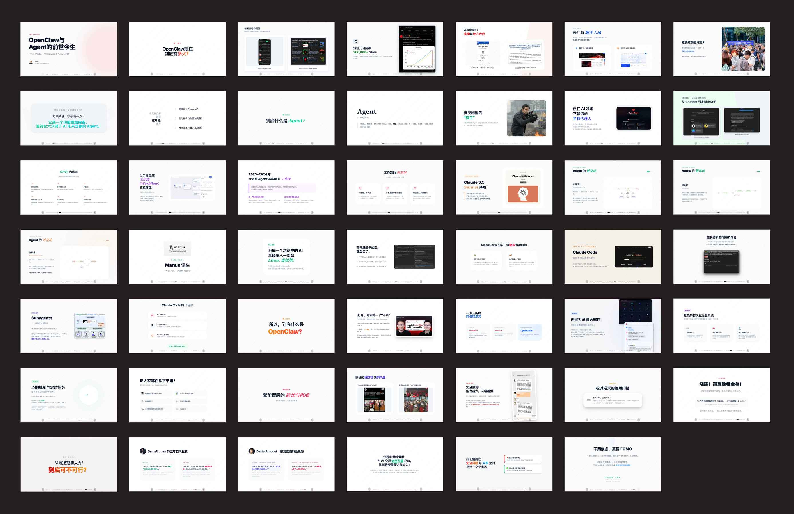
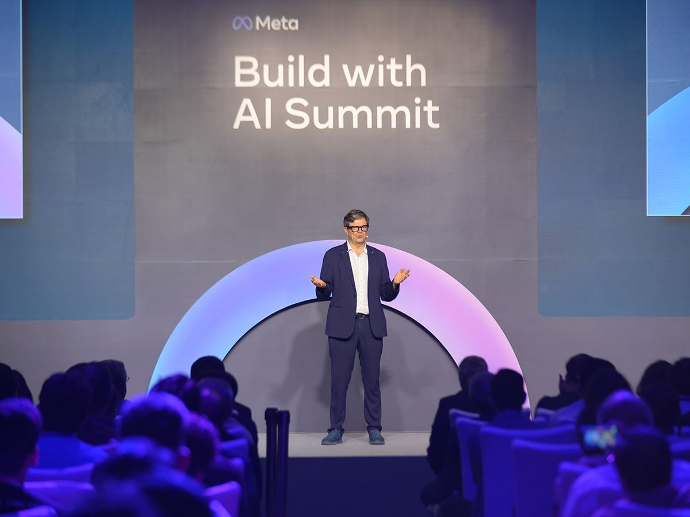
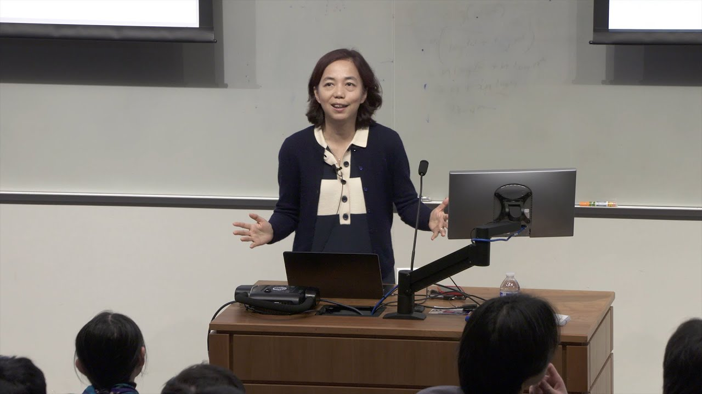
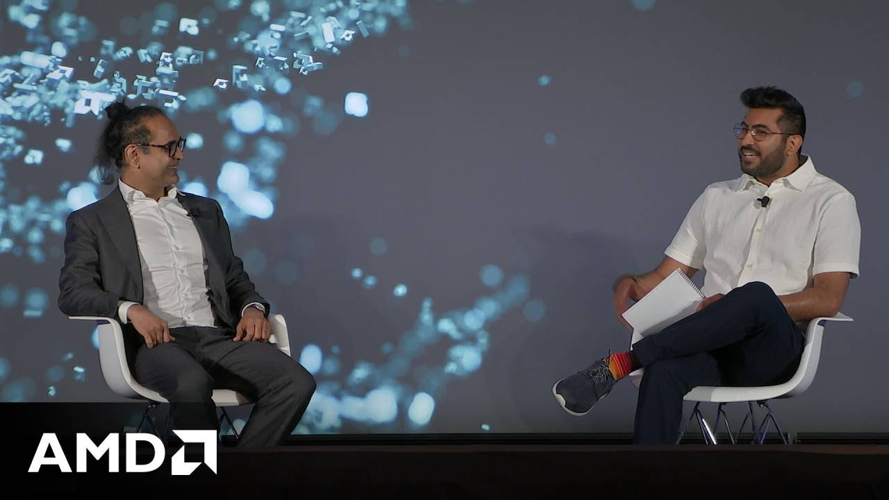
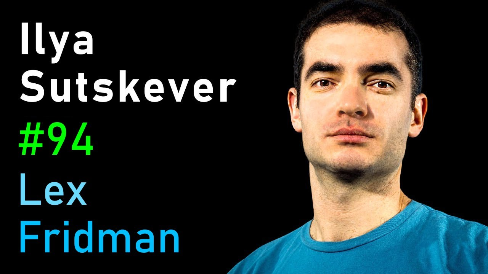
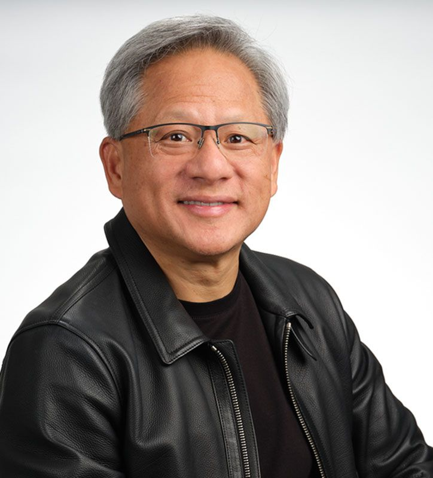
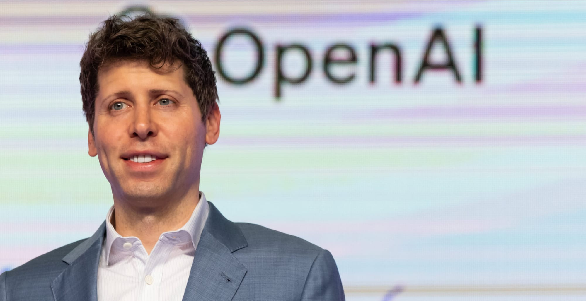
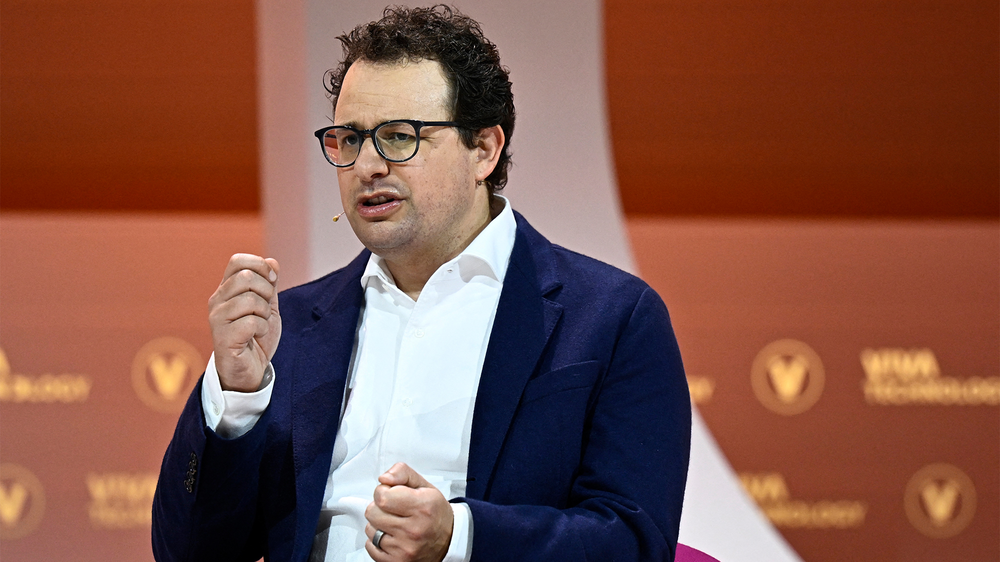

AI 的跃迁不是突然发生的。它是几代研究者把理论打通、几代工程师把架构做稳、几代创业者把产品推向大众，最后再被资本与算力体系共同放大的结果。
AI历史上的10位关键人物
这一页不是人物百科，而是一张帮助你理解 AI 发展脉络的导航图。把十位关键人物按“奠基者、架构定义者、产品推动者、产业放大者”放进同一张图里，很多零散新闻才会真正连起来。
四个关键转折
2012
深度学习出圈
AlexNet 赢下 ImageNet 后，神经网络不再只是学术尝试，而被视为真正能改写 AI 主路线的方法。
2014
卷积网络成熟
视觉能力大幅提升，AI 开始在识别、检测、理解图像上接近可商用阶段。

2017
Transformer 诞生
大模型时代的核心底座被搭出来，语言、代码、图像和视频后来的很多突破都从这里长出来。

2022 以后
产品化爆发
ChatGPT 把模型能力第一次推给亿级用户，AI 从行业话题变成普通人的日常工具。

十位关键人物
奠基者
Geoffrey Hinton
把神经网络从边缘路线重新推回主舞台，被广泛视作深度学习之父。

视觉先驱
Yann LeCun
卷积网络代表人物，让 AI 在图像理解上的工程路径越来越清晰。

数据组织者
李飞飞
ImageNet 改变了研究者训练和比较模型的方式，推动了视觉 AI 的大跃迁。

架构定义者
Ashish Vaswani
Transformer 论文核心作者之一，大模型时代真正的结构底座来自这批人。
研究产品化
Demis Hassabis
把顶级研究、商业落地和长期 AGI 叙事放到同一个组织里持续推进。

技术核心
Ilya Sutskever
是 OpenAI 研究路线中的关键人物，也代表了“相信规模会带来智能”的那一派。

算力放大器
Jensen Huang
没有 GPU 产业链的成熟，就不会有今天这样规模化训练的大模型竞赛。

产品推动者
Sam Altman
把实验室模型能力变成全民可感知的产品入口，是 AI 产业化的关键角色。

安全派创业者
Dario Amodei
代表了另一种大模型路线：一边追求性能，一边把安全与可解释性推到前台。

教育者与布道者
Andrej Karpathy
把复杂模型机制翻译成大家能理解的语言，是连接研究圈和大众认知的重要桥梁。